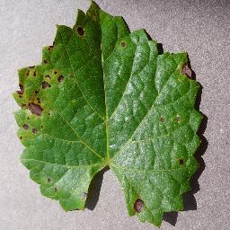
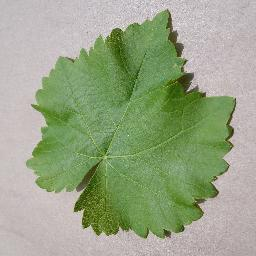
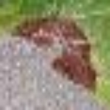
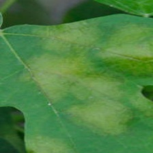
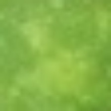

El experimento estudia si incorporar imágenes de vid obtenidas en condiciones visuales naturales mejora la generalización de una red neuronal convolucional entrenada inicialmente con PlantVillage. Debido a que la única etiqueta con equivalencia segura entre las fuentes disponibles es la podredumbre negra, la comparación se formuló como una tarea binaria: black_rot frente a not_black_rot.
Se compararon dos modelos ResNet50 bajo el mismo protocolo: una línea base entrenada exclusivamente con imágenes controladas y un modelo híbrido entrenado con imágenes controladas más ejemplos naturales positivos y negativos. Ambos modelos fueron evaluados sobre exactamente los mismos conjuntos de prueba.
Se utilizó el dataset público zienabesam/grape-plant-from-plant-village-dataset, compuesto por
4.062 imágenes de hojas completas fotografiadas sobre fondos homogéneos. Sus clases originales y su
normalización binaria fueron:
| Clase PlantVillage | Imágenes | Clase binaria |
|---|---|---|
| Grape___Black_rot | 1.180 | black_rot |
| Grape___healthy | 423 | not_black_rot |
| Grape___Esca_(Black_Measles) | 1.383 | not_black_rot |
| Grape___Leaf_blight_(Isariopsis_Leaf_Spot) | 1.076 | not_black_rot |
La partición reproducible fue 80/10/10: 3.250 imágenes de entrenamiento, 406 de validación y 406 de prueba.


Las imágenes naturales proceden del dataset LDD y fueron convertidas desde anotaciones de detección a recortes de clasificación de 224×224 píxeles. La división se realizó agrupando por imagen de origen para impedir que recortes de una misma fotografía aparecieran simultáneamente en entrenamiento y prueba.
| Clase natural | Entrenamiento | Prueba | Clase binaria |
|---|---|---|---|
| vl_black_rot | 4.368 | 500 | black_rot |
| vl_downy_mildew | 2.092 | 174 | not_black_rot |
| vl_powdery_mildew | 1.779 | 232 | not_black_rot |



Las figuras son ejemplos pertenecientes a los conjuntos de entrenamiento utilizados. Las imágenes naturales son recortes de regiones anotadas; su variación de escala, nitidez, iluminación y encuadre contrasta con las hojas completas y los fondos homogéneos de PlantVillage.
| Componente | Línea base controlada | Híbrido balanceado |
|---|---|---|
| Entrenamiento controlado | Sí | Sí |
| Positivos naturales | No | Sí |
| Negativos naturales | No | Sí |
| Validación controlada compartida | Sí | Sí |
| Test controlado compartido | 406 imágenes | Las mismas 406 imágenes |
| Test natural compartido | 906 imágenes | Las mismas 906 imágenes |
Se empleó ResNet50 con pesos iniciales de ImageNet. El entrenamiento se dividió en 8 épocas con el backbone congelado y 15 épocas de ajuste fino completo. Se utilizó Adam, ponderación inversa de clases, entrada de 224×224 píxeles y selección del mejor checkpoint mediante Macro F1 de validación. Ambos entrenamientos usaron la semilla 42 para reproducir la inicialización y el orden de carga.
| Modelo | Test | Accuracy | Macro F1 | F1 black_rot |
|---|---|---|---|---|
| Solo PlantVillage | Controlado | 100,00 % | 100,00 % | 100,00 % |
| Híbrido balanceado | Controlado | 100,00 % | 100,00 % | 100,00 % |
| Solo PlantVillage | Natural | 44,70 % | 31,06 % | 0,40 % |
| Híbrido balanceado | Natural | 97,90 % | 97,88 % | 98,12 % |
| Métrica | Solo PlantVillage | Híbrido balanceado |
|---|---|---|
| Sensibilidad | 0,20 % | 99,00 % |
| Especificidad | 99,51 % | 96,55 % |
| Precision | 33,33 % | 97,25 % |
| F1 black_rot | 0,40 % | 98,12 % |
| Balanced accuracy | 49,75 % | 97,78 % |
| Falsos positivos | 2 | 14 |
| Falsos negativos | 499 | 5 |
La línea base perdió 55,30 puntos porcentuales de accuracy al cambiar del dominio controlado al natural. Su especificidad permaneció alta, pero su sensibilidad fue prácticamente nula: reconoció solo 1 de 500 casos naturales de podredumbre negra. Este comportamiento evidencia una brecha de dominio severa.
El modelo híbrido balanceado conservó el rendimiento perfecto sobre el test controlado y alcanzó 97,90 % sobre el test natural. Identificó correctamente 495 de 500 positivos y 392 de 406 negativos. La diferencia de accuracy entre dominios se redujo a 2,10 puntos porcentuales.
Un primer híbrido que incorporaba únicamente positivos naturales había alcanzado 100 % de sensibilidad pero solo 13,55 % de especificidad, indicando el atajo imagen natural = black_rot. La incorporación de negativos naturales elevó la especificidad a 96,55 % sin degradar sustancialmente la sensibilidad, que se mantuvo en 99,00 %. Esto muestra la importancia del balance por clase y por dominio.
Bajo el protocolo evaluado, el entrenamiento híbrido balanceado redujo considerablemente el domain gap para la detección binaria de podredumbre negra, sin degradar el rendimiento sobre imágenes controladas. El resultado respalda la hipótesis de que la diversidad visual natural debe incorporarse de forma balanceada, incluyendo tanto ejemplos positivos como negativos.
Para consolidar la evidencia se recomienda:
Archivos de evidencia: controlled_test_metrics.json, natural_test_metrics.json,
train_history.json y label_map.json de cada ejecución. Los checkpoints no son necesarios
para auditar las métricas y deben almacenarse fuera del repositorio Git por su tamaño.
zienabesam/grape-plant-from-plant-village-dataset.